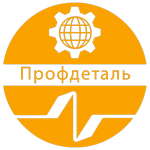

Полезные Ресурсы
Здесь собраны ссылки на материалы, которые помогут лучше понять суть проекта, отрасль металлообработки и связанные технологии.

Организация-партнёр: ООО "Профдеталь"
Описание: Компания Профдеталь предлагает услуги металлообработки и производство металлоизделий на заказ в Москве и Московской области Посетить сайт партнера.
Статьи и Сайты:
- Обзор современных технологий металлообработки - Статья, подробно описывающая различные методы и процессы.
- Руководство по ЧПУ обработке для начинающих - Полезный ресурс для тех, кто хочет понять основы ЧПУ.
- Различные техники сварки и их применение - Обзор популярных сварочных технологий.
- Новости отрасли металлообработки - Портал с актуальной информацией и трендами.
Видеоматериалы:
Мы планируем добавить видеообзоры и демонстрации работы платформы в будущем.